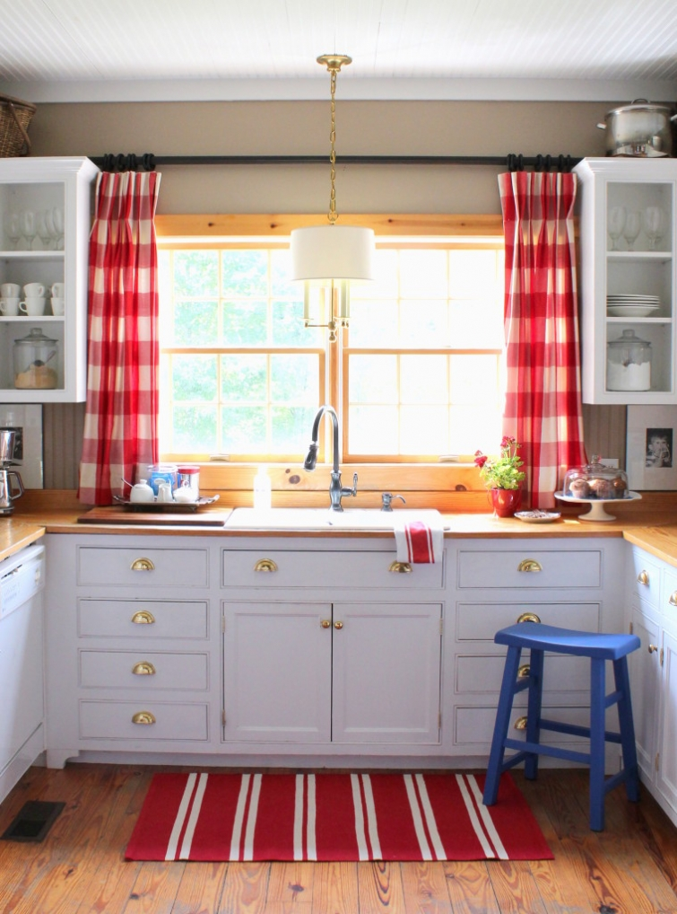

.png)
.PNG)
.PNG)
.PNG)
.PNG)
.PNG)
.JPG)
.JPG)
.PNG)
.PNG)


Hi folks! Hope you are having fun in the sun wherever you are today. 🙂 I am just dropping in for a quick Talk of the Weekend for you. So what are we talking about this weekend? Let’s see….
How about another beautiful inn? Do you remember Ocean House that we looked at a couple of weeks ago? Well they have a sister inn that is also quite stunning. Check out the Weekapaug Inn in Westerly, Rhode Island here. (Isn’t that a gorgeous bathroom?!)
And here is a one of their promotional videos that you might also enjoy viewing.
While we are on our virtual trip to Rhode Island check out this tour of a home there.
Now let’s hop over to Nantucket to see the Hilfiger estate that is/was for sale.
And you can take a virtual tour of it here in this video.
If you would like something a little smaller, check out this pretty Nantucket vacation home.
(Don’t you just love that hallway?!)
Do you remember last week when I told you my new addiction was stripes? If you like them as well, take a look at this Cape Cod rental. I believe they have a thing for stripes too! 🙂
Now let’s leave New England and head to Florida (since we are all on vacation. 🙂 ) A few days ago, I ran across this house in Traditional Home magazine.

It’s located in the charming Watercolor development on the Gulf coast. As I was reading the article, I kept getting this deja vu feeling that I had seen those rooms before….especially this one.
As I read more, it finally made sense. I had indeed sort of seen the rooms before, and in Traditional Home magazine at that. This is the family’s third home that designer Georgia Carlee has done for them. Their second home had been featured a number of years ago. Here is one of the shots from that feature.
Same color scheme, same drapes, same framed shells. That would explain the deja vu feeling I was having. 🙂
Okay, now let’s talk of food. This weekend, in a nearby town, you could find the world’s largest peach cobbler. Truly. It was 11 ft. long, 5 ft. wide, and 6 inches deep.
The Georgia peaches are ripe, and I am wanting a peach cobbler (although not the world’s largest one!) It won’t be on our daughter’s diet for us, but too bad. You have to enjoy those peaches when they are at their peak. 🙂 So here’s the old fashioned easy recipe. (But I’m sure our daughter would want me to look for a Paleo version which this is not. 🙁 )
Another thing I have been craving is this dessert – a banana split cake. One of my teacher friends mentioned it in a recent email, and it has stayed on my mind since then! I found this version served in Mason jars, and of course, it’s perfect. 🙂
One last thing to talk about today…and not food. 🙂 I finished reading Mary Kay Andrew’s newest novel, Beach Town a couple of weeks ago. It was delightful! If you haven’t read it, you should.
Beach Town
(My Amazon Affiliate link)
And if you happen to live close to Pawleys Island, South Carolina you are sooooo lucky. MKA will be making two guest appearances there this Friday! Here’s the schedule:
PAWLEYS ISLAND, SC | Friday, June 19 | 11:00 AM – 1:00 PM
Luncheon, Discussion, Q&A, Book Signing
Hosted by Litchfield Books
Kimbels Restaurant at Wachesaw Plantation Club
1930 Governors Landing
Murrells Inlet, SC
Lunch with the author and presentation is $25.00 per person. There will be a book signing following the event at Litchfield Books. Books at this event will be available at a 10% discount from Litchfield Books. To make a reservation for the luncheon call 843-235-9600. For more information, CLICK HERE.
PAWLEYS ISLAND, SC | Friday, June 19 | 2:00 PM
Book Signing
Litchfield Books
14427 Ocean Highway
Pawleys Island, SC
For information, CLICK HERE.
If you are like me and can’t make it to those events, perhaps you can make it to her one last tour stop near Atlanta in Lawrenceville. Here are the details for it:
LAWRENCEVILLE, GA | Wednesday, August 19 | 12:00 PM
Beach Party Author Luncheon with Patti Callahan Henry
Garden Plaza at Lawrenceville
230 Collins Industrial Way
Lawrenceville, GA
Doors open at 11:30. Seating is limited. Your $10.00 ticket includes lunch. Tickets available for purchase through the Friends of the Gwinnett Library at http://friendsgcpl.org/ or mail a check to Friends of the Gwinnett Library 1001 Lawrenceville Hwy, Lawrenceville GA 30046. Funds benefit the Friends of the Gwinnett Library system.
For more information, visit:
http://www.gwinnettpl.org/event/beach-party-author-luncheon
(all info from marykayandrews.com)
And that is all for today’s Talk of the Weekend. We have out of town company until Tuesday, so it is a little busy here for the next couple of days. 🙂 But I will have part two of the summer home tour up early next week for you. Thank you so much for all the wonderfully sweet comments you left on part 1. I truly believe you are the nicest readers in all of blogland!
I hope your weekend is filled with travels to special places and fun things to do.
Until next time…


.PNG)
What a great post! The banana splits in the jars look soooo. good. I am reading MKA’s book Savannah Breeze. Love her books. Yes Kathy, Josie needs to get herself retired. Love that car!
Enjoy your company.
DiAnne
——————————————————————–
I am so glad you enjoyed it DiAnne! I would love to have one of those banana split treats right now. Yum! I need to get another MKA book to read, but I can’t seem to put them down once I start them…and that makes me keep reading until the wee hours of the morning. Not good. Wasn’t that car just the cutest thing?!I had to find a post to put it in. 🙂
Kelly
Why couldn’t this be our week at Pawleys Island, Anita???
Another fun post, Kelly! I am so glad you retired! (Now, if Josie would just retire!)
———————————————————————
I am glad to be retired too, but I still can’t seem to keep up with the comments here. I have got to start having “regular hours” to work on the blog. (But in the summer, my brain does not seem to understand “regular hours.” LOL)
Kelly
Give me a spoon, I’m going in! To the peach cobbler, that is. Although now I have so many of your links open that it’s going to take me a while to get to the cobbler!
——————————————————————————————-
Too funny Vicki! I wish we had a peach cobbler to dig into here…yum! Hope you made it through all the open links on your computer. 🙂
Kelly
Keep the Nantucket postings coming…. I think I could eat that peach cobbler for breakfast. Yum! I like the fun stripes you are incorporating with your signature checks. Love your mini cokes. I have seen the traditional red, but where did you find a green label one, as seen in your playroom picture? Love your red, white and blue…the 4th will be here before we know it.
———————————————————————
Love places in Nantucket! Peach cobbler should be perfectly acceptable for breakfast…it’s fruit and bread.:) The green labeled Cokes came from Walmart. Yes, the 4th will be here before we know it!
Kelly
There is nothing more wonderful for the weekend than opening email to see those adorable red buffalo checked curtains and those beautiful white cabinets of your kitchen. And I have to say is that red stripe rug is a winner. These weekend arm chair travels are just my cup of tea (really coffee). Pinned the peach cobbler, my favorite. But we are adhering strictly to low carb until September. After lab work we may have a momentary lapse and enjoy summers fruits in a cobbler. Summer really is the hardest for diets! Enjoy your company!
—————————————————————–
Thank you so much Peggy. I am happy that you enjoyed the weekend arm chair travels. 🙂 Oh…low carb. Not fun. My husband is on that….daughter is on a Paleo diet, and I am supposed be on low sodium… which means cooking around here is a challenge! I hope your lab work turns out well. The one good thing about summer eating, at least for me, is that it has so many fresh vegetables that I love to eat (but I like salt on them!)
Kelly
I am loving so many posting from you- if this is Kelly retired I am glad you made the move!!!! Love your site! Enjoy your week.
——————————————————————
Yes, this is me retired….busy busy! Thank you for visiting and loving the blog Peggy. As long as you all keep reading, I will keep writing. 🙂
Kelly
Kelly,
This will be a short comment since you’ve given us so many links to things I know I want to see more of! Now I’m hungry for peach cobbler. 🙂
I can’t wait to see the rest of your home tour.
xo,
Karen
————————————————————————
Hope you got some peach cobbler this weekend. We did peach shortcake instead and homemade ice cream, but I think I will do a cobbler next weekend though. Thank you for checking out all the links. There were some beautiful houses there!
Kelly
What a nice surprise after Sunday dinner/lunch which included fresh green beans with pattypan squash and small white potatoes cooked on top! Also a juicy grilled burger with heirloom tomato and lettuce! Dessert will be heart shaped ( without cookie cutters- a trick I learned!!) old fashioned sugar cookies. Now to go back and enjoy the details of your post! Loved the red/white rug in your kitchen and noticed you painted your kitchen stool BLUE! Nice!! Happy Flag Day! Enjoy your visitors! Relax with some lemonade and sing ” In the Good o’ Summer Time!”
———————————————————————-
Your lunch sounded fabulous! We had fish tacos. 🙂 That rug is a keeper for sure! They had one in gold, but I wasn’t sure I would use it, so it stayed at the store. Hope you had a fun flag day!
Kelly
You NEVER let your readers down!
Love you being retired, we hear more from you. Keep us motivated.
A good read, peach cobbler, banana split cake in a jar and lots of stripes. Never better!
PS will you be seeing Ms. Andrews? Is this your part of Georgia?
———————————————————————–
That does sound like a good combination! Still craving that banana split cake. 🙂 No, I won’t be seeing MKA in South Carolina. It is possible I can make the 2 1/2 hour drive to see her in August, but I don’t know when we are making our trip to New England for sure. If we are here, I am sure going to try to make it to her last book tour event.
Kelly
I love this website….and you are the best Kelly. I have sent this site to my friend and she just went nuts! She is so excited to read and to bake all your wonderful recipes. By the way the Orange Marmalade Cake was the biggest hit at my book club dinner. I was so worried about making it. I never need to worry again. Delicious cake. And I can’t wait to make the apple cake in the fall. We are from Seattle Wash where we grow the most delicious apples….Thank you again, from the older generation. Barb
———————————————————————
Thank you for sharing the blog love Barb. 🙂 And I am glad your friend has found things here that she enjoys as well. I knew your cake would turn out just fine. It is delicious but it has a zillion steps. That’s the part that I find challenging…just a bit time consuming (but so worth it!) And with your Washington apples that apple cake will be divine in the fall. You will want to lick that caramel sauce on it!
Happy cooking!
Kelly